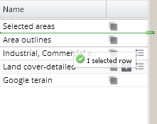
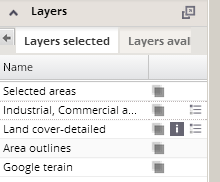

The panel of selected layers enables the user to modify the order in which layers
will be displayed in the map. You can modify the default order by clicking on the appropriate layer's name and dragging it up or down through the list of selected layers. While a layer is being held and dragged, a green line ending with a green arrow appears in the list, indicating the position to which the layer will be moved.

Change the position of the layer in the list by dropping the layer; it remains at the position indicated by the green line, and the order of layers in the map will be modified correspondingly.
